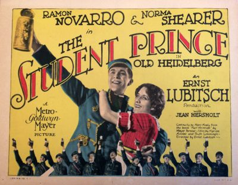

THE STANFORD THEATRE
Now Showing
·
Upcoming
·
Past
·
Search
February 20 - April 20, 2025
Lubitsch, Mamoulian, Sternberg Three Great Directors
19 bills
February 20 - 23
Love Me Tonight (1932)
96 min
The Scarlet Empress (1934)
104 min
February 27 - 28
The Blue Angel (1930)
108 min
The Devil Is a Woman (1935)
75 min
March 1
The Marriage Circle (1924)
92 min
One Hour with You (1932)
82 min
March 2

The Student Prince in Old Heidelberg (1927)
105 min
One Hour with You (1932)
82 min
March 6 - 7
Bluebeard's Eighth Wife (1938)
85 min
The Song of Songs (1933)
90 min
March 8 - 9
Shanghai Express (1932)
80 min
The Shanghai Gesture (1941)
95 min
March 13 - 14
The Smiling Lieutenant (1931)
92 min
The Merry Widow (1934)
99 min
March 15 - 16
Trouble in Paradise (1932)
83 min
Design for Living (1933)
88 min
March 20 - 21
Dishonored (1931)
85 min
Blonde Venus (1932)
93 min
March 22
The Docks of New York (1928)
76 min
Morocco (1930)
88 min
March 23
Lady Windermere's Fan (1925)
89 min
Morocco (1930)
88 min
March 27 - 28
City Streets (1931)
82 min
Applause (1929)
82 min
March 29 - 30
Blood and Sand (1941)
124 min
The Mark of Zorro (1940)
94 min
April 3 - 4
An American Tragedy (1931)
96 min
Broken Lullaby (1932)
76 min
April 5 - 6
Heaven Can Wait (1943)
108 min
Cluny Brown (1946)
108 min
April 10 - 11
Becky Sharp (1935)
85 min
The Gay Desperado (1936)
86 min
April 12 - 13
To Be or Not to Be (1942)
93 min
Ninotchka (1939)
110 min
April 17 - 18
The Love Parade (1929)
110 min
Monte Carlo (1930)
94 min
April 19 - 20
Queen Christina (1933)
97 min
Dr. Jekyll and Mr. Hyde (1941)
113 min
Archived
•
StanfordTheatre.org Original